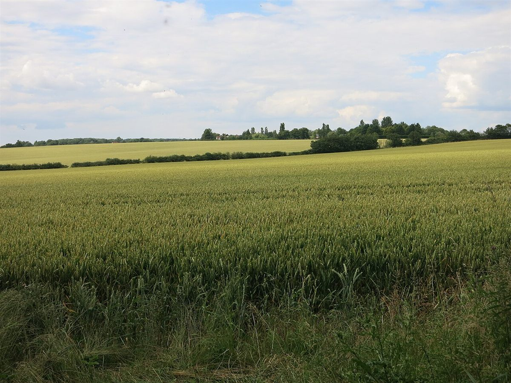
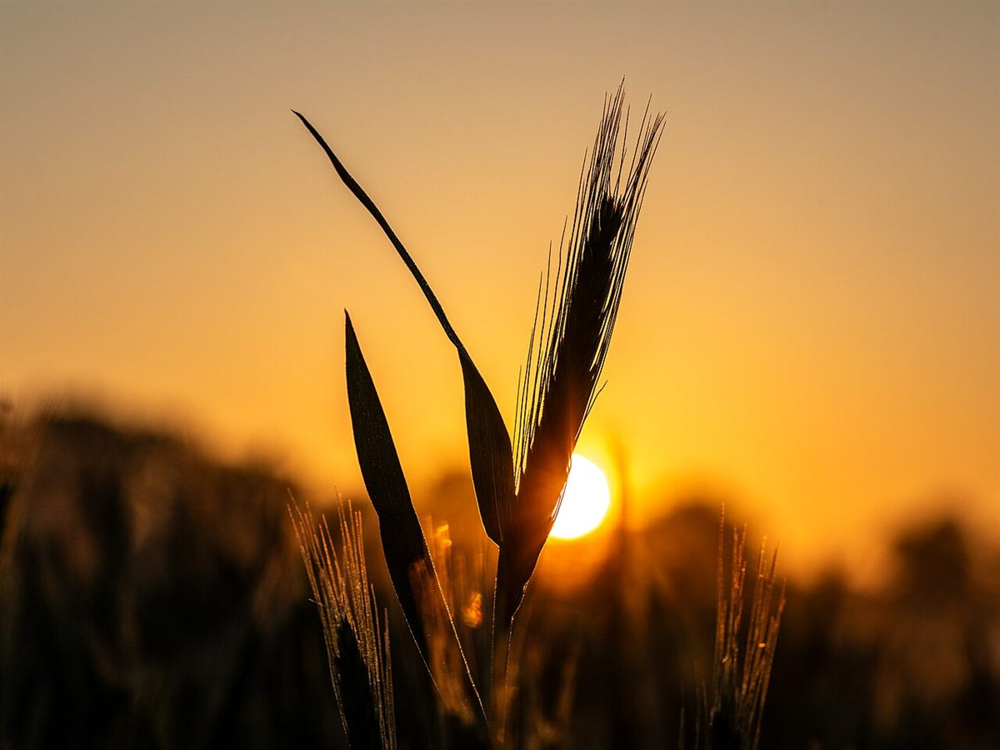

お店について
petitぱんは、京都府向日市向日町南山にあるベーカリーです。開業の経緯・こだわり・スタッフ・使用素材などは、準備中(お問い合わせください)。
制作側の案お店の理念ではありません
この試作サイトでは、「petit」という店名から連想して、「ちいさなひとつ」というコンセプトを考えてみました。これは制作側の提案で、お店の理念や由来、パンの大きさ、商品の内容を示すものではありません。
基本情報
| 店名 | petitぱん |
|---|---|
| 所在地 | 京都府向日市向日町南山 |
| 電話 | 075-934-3560 |
| @petit.2017 | |
| 営業時間 | 準備中(お問い合わせください) |
| 定休日 | 準備中(お問い合わせください) |
| 駐車場 | 準備中(お問い合わせください) |
| 支払い方法 | 準備中(お問い合わせください) |


掲載写真はフリー素材のイメージです。店舗の実際の商品・店内・外観ではありません。他地域で撮影された写真や撮影地が不明な写真を含みます。